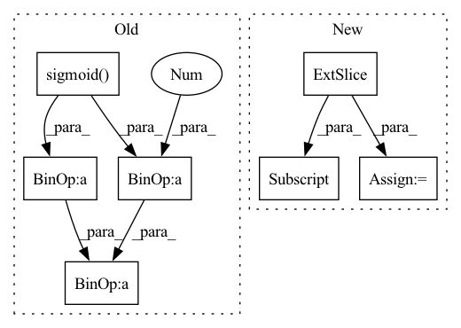

Pattern ID :8457

Before Change
// Update gate of the GRU.
update_gate_conv = layers.SNConv2D(num_channels, self._kernel_size, sn_eps=self._sn_eps)
update_gate = F.sigmoid(update_gate_conv(xh))
// Gate the inputs.
gated_input = torch.cat([x, read_gate * prev_state], dim=1)
// Gate the cell and state / outputs.
output_conv = layers.SNConv2D(num_channels, self._kernel_size, sn_eps=self._sn_eps)
c = F.relu(output_conv(gated_input))
out = update_gate * prev_state + (1.0 - update_gate) * c
new_state = out
return out, new_state
After Change
outputs = []
for step in range(x.size(1)):
// Compute current timestep
output, hidden_state = self.cell(x[:, step, :, :, :], hidden_state)
outputs.append(output)
// Stack outputs to return as tensor
outputs = torch.stack(outputs, dim=0)
In pattern: SUPERPATTERN
Frequency: 3
Non-data size: 7
Instances
Fragment ID: 29434528
Project Name: openclimatefix/skillful_nowcasting
Commit Name: b080785f5f559396d0b7e1a52d1c6d9a948d9439
Time: 2021-11-08
Author: jacob@bieker.tech
File Name: nowcasting_gan/layers/ConvGRU.py
M Class Name: ConvGRU
N Class Name: ConvGRU
M Method Name: forward(3)
N Method Name: forward(3)
M Parent Class: torch.nn.Module
N Parent Class: torch.nn.Module
M File Name: nowcasting_gan/layers/ConvGRU.py
N File Name: nowcasting_gan/layers/ConvGRU.py
M Start Line: 19
M End Line: 51
N Start Line: 70
N End Line: 78
'>
Before Change
Returns:
torch.Tensor: Saliency Map
saliency_map = torch.sigmoid(torch.mean(feature_map, dim=1))
saliency_map = (
255
* (saliency_map - torch.min(saliency_map))
/ (torch.max(saliency_map) - torch.min(saliency_map) + 1e-12)
)
saliency_map = saliency_map.to(torch.uint8)
return saliency_map
After Change
saliency_map = (
255
* (saliency_map - min_values[:, None])
/ (max_values - min_values + 1e-12)[:, None]
)
saliency_map = saliency_map.reshape((bs, h, w))
saliency_map = saliency_map.to(torch.uint8)
return saliency_map
'>
Fragment ID: 29434535
Project Name: openvinotoolkit/model_preparation_algorithm
Commit Name: e2c8010f30007ae6429e629b2c2a5b2c13815d07
Time: 2022-07-21
Author: eugene.liu@intel.com
File Name: mpa/modules/hooks/auxiliary_hooks.py
M Class Name: SaliencyMapHook
N Class Name: SaliencyMapHook
M Method Name: func(1)
N Method Name: func(1)
M Parent Class:
N Parent Class:
M File Name: mpa/modules/hooks/auxiliary_hooks.py
N File Name: mpa/modules/hooks/auxiliary_hooks.py
M Start Line: 87
M End Line: 92
N Start Line: 87
N End Line: 97
'>
Before Change
:return:
items_embedding = self.item_embedding(torch.tensor([i for i in range(self.items_total)]).to(nodes_output.device))
alpha = torch.sigmoid(self.alpha)
embed = (1 - alpha) * items_embedding.clone() + alpha * nodes_output
return embed
After Change
items_embedding = self.item_embedding(torch.tensor([i for i in range(self.items_total)]).to(nodes_output.device))
batch_embedding = []
for _ in range(batch_size):
output_node_features = nodes_output[id:id + num_nodes, :]
embed = (1 - self.alpha) * items_embedding
embed = embed + self.alpha * output_node_features
batch_embedding.append(embed)
id += num_nodes
batch_embedding = torch.stack(batch_embedding)
'>
Fragment ID: 29434540
Project Name: benedekrozemberczki/pytorch_geometric_temporal
Commit Name: 6c36f8a6c545046914ce31c842b9648ac37c8b93
Time: 2021-07-24
Author: benedek.rozemberczki@gmail.com
File Name: torch_geometric_temporal/nn/attention/dnntsp.py
M Class Name: GlobalGatedUpdater
N Class Name: GlobalGatedUpdater
M Method Name: forward(2)
N Method Name: forward(2)
M Parent Class: nn.Module
N Parent Class: nn.Module
M File Name: torch_geometric_temporal/nn/attention/dnntsp.py
N File Name: torch_geometric_temporal/nn/attention/dnntsp.py
M Start Line: 84
M End Line: 87
N Start Line: 88
N End Line: 101